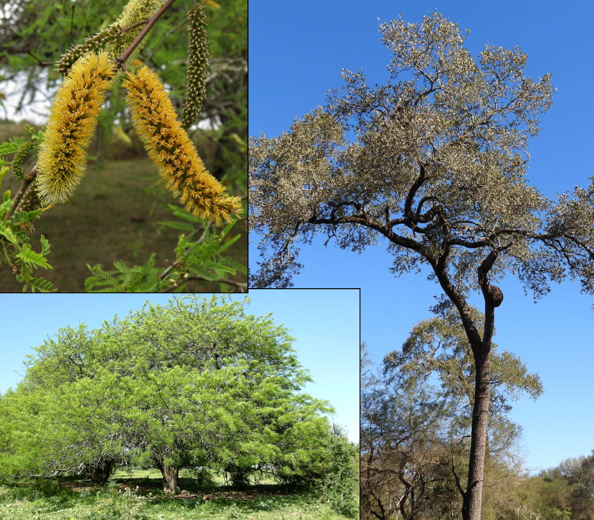

Ecorregiones

Ícono de la región chaqueña, su nombre cita la tupidez vegetal y, a su vez, la riqueza biológica que alberga. Abarca más de 120000 hectáreas de selva y pastizal, atractivos para safaris como los que se realizan en las sabanas del África subsahariana.


En la flora, destaca el quebracho como árbol distintivo en la conformación de los bosques (moradas de loros habladores y monos aulladores), codiciado por su dureza y utilidad en la fabricación de muebles y (antiguamente) vías de ferrocarril. También, encontramos al algarrobo blanco, brindando espacios de sombra para los habitantes faunísticos de flores amarillas, similares a cardos. Estos vegetales conforman parte esencial del entorno, ya que moldean el paisaje en el que las demás especies viven (por ejemplo, impidiendo el crecimiento de otras platas en su sombra o sirviendo de refugio para las aves y monos), por lo que su conservación es fundamental si se quiere preservar el resto del componente biótico endémico.
Estos vegetales conforman parte esencial del entorno, ya que moldean el paisaje en el que las demás especies viven (por ejemplo, impidiendo el crecimiento de otras platas en su sombra o sirviendo de refugio para las aves y monos), por lo que su conservación es fundamental si se quiere preservar el resto del componente biótico endémico.
Por su parte, los animales, si bien no tan grandes como los elefantes y jirafas de África, son igual de interesantes y únicos. El enigmático oso hormiguero se exhibe como su emblema, rompiendo un termitero con sus garras, usando su alargado hocico y escurridiza lengua para capturar a sus pequeñas presas, mucho más minúsculas si tomamos en cuenta su tamaño: más de 1,80 metros de largo. Comparte el hábitat con su pariente el tatú carreta, el armadillo más grande del planeta (con 60 kilos de peso), también predilecto por los insectos, aunque incluye frutas y carroña en su alimentación; y el aguará guazú, un cánido que pareciera el cruce entre un zorro (por su pelaje rojizo) y un ciervo (debido a su soltura al andar, esbeltez y tamaño, de más de 1 metro de altura), comiendo pequeños animales y frutas.
Saliendo de las sabanas, y si miramos hacia las copas de los árboles, encontraremos una gran diversidad de aves cantoras, y, de vez en cuando, una tropa de monos carayá. También conocidos como monos aulladores, con este otro nombre se puede deducir fácilmente cuál es su característica principal: dar grandes coros, prodigios de una voz gruesa y extremadamente ruidosa, más aún que la de un león. Realizan estos gritos cuando detectan alguna amenaza, como lo es el yaguareté o jaguar, el mayor depredador de la región, con un peso de más de 200 kilos. Si bien representa un peligro para los demás animales, controla su población y la mantiene a raya, evitando una catástrofe en el ecosistema. A pesar de su importancia (y la del resto de especies), están despareciendo, ya sea por la caza o por la destrucción del hábitat, coronándose El Impenetrable como uno de los últimos refugios silvestres para estos gigantes sudamericanos.
.png)